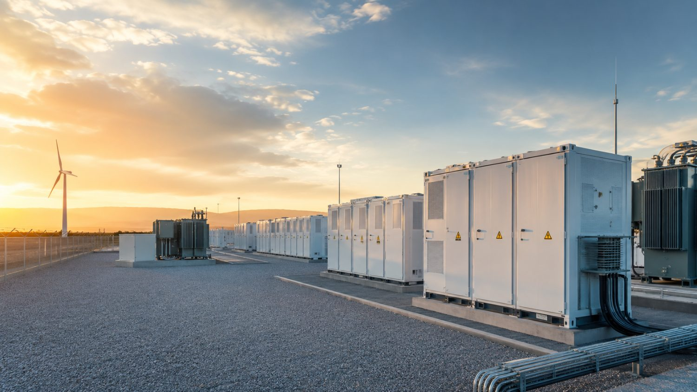

Mine microgrid and diesel displacement
Test load fit, operating boundary, energy security and the practical questions behind diesel displacement in remote and weak-grid operations.
Independent early-stage project screening · F1-F4 workflow
Heliovulcan helps mine owners, industrial energy users and project sponsors identify approval, site, microgrid and financeability gaps in mining solar, battery storage and hybrid-energy projects before commissioning full engineering and formal due diligence.
The F1-F4 Pre-DD workflow turns public and early project information into a clear readiness view, an evidence-gap register and a practical next-step pathway.
Mining and industrial energy focus
An early screen helps a mine or industrial operator test whether a remote solar-battery concept, mine microgrid or hybrid power system is worth advancing before detailed design.
Test load fit, operating boundary, energy security and the practical questions behind diesel displacement in remote and weak-grid operations.
Screen mining solar and battery-storage opportunities against site constraints, load data, dispatch assumptions and the owner’s decision pathway.
Identify evidence gaps, public-information limits and the specialist work needed before formal engineering, investment review or lender due diligence.
Who this is for
Heliovulcan is designed for mine owners, industrial energy users and project sponsors evaluating PV+BESS, diesel-hybrid or weak-grid opportunities before full engineering and formal due diligence.
Testing diesel displacement, energy security, candidate sites and the evidence needed before engaging EPC and specialist advisers.
Comparing a grid, tariff, PPA, EaaS or behind-the-meter proposal and identifying which savings and risks are genuinely decision-relevant.
Preparing an opportunity for owner discussion, data-room access, specialist DD, hourly modelling and commercial structuring.
Use the screen when the decision is whether to proceed, redesign, compare an offer or stop — and the project still has important gaps in approvals, site layout, microgrid definition, owner data or financeability.
The Pre-DD workflow
Each project is screened through four connected questions using public and early project information. Together they test whether a hybrid energy idea is ready to advance — or what has to be resolved first.
Does the project fit within the existing approval pathway, or does it trigger new issues around disturbance, MMP / licence variation, water, fire, heritage, biodiversity, closure or ownership chain?
Where could PV, BESS, PCS and interconnection equipment realistically sit, and what constraints are visible from public maps, mine layout, watercourses, roads, pipelines and closure areas?
How would PV, BESS, diesel generation, PCS, EMS and mine loads connect, and what SLD, genset, switchboard, control, metering and load data is required before reliability can be assessed?
Which commercial structure is worth validating, and what must be proven before the project can move toward EPC pricing, term sheet, lender model, CP mapping or financial close preparation?
Featured public Pre-DD case
A public-information desktop Pre-DD screen for a remote mine hybrid-energy case. The screen tests whether a 60% renewable diesel-PV-BESS hybrid pathway is more useful than a short-life standalone case or a 100% renewable upper-bound case. It combines financeability, public map interpretation, candidate energy zones, approval delta questions, microgrid boundary questions and owner data-room requirements.

The screen frames the project across F1 approval delta, F2 site suitability, F3 microgrid boundary and F4 financeability readiness. S4 is the scenario selected for further validation — not a final design or investment recommendation.
Figures and zones are indicative, public-information outputs. They must be validated against owner data, specialist DD and hourly dispatch modelling before any decision.
What the workflow produces
Three structured outputs from one Pre-DD screen, written for different readers and different stages of the conversation.
For public websites, first conversations and non-confidential sharing.
For first owner / sponsor discussions.
For turning uncertainty into action.
Two public samples from the Fountain Head screen are downloadable: the Public Pre-DD Brief and the financeability report. The detailed client report and DD register are shared in a first owner / sponsor discussion — not as a formal due-diligence deliverable. All figures are indicative public-data outputs.
About
Heliovulcan Energy is an independent advisory and modelling practice focused on industrial and mining energy projects.
The work focuses on one question:
Can a project survive real-world development and financing constraints before significant time and money are committed?
Heliovulcan specialises in public-information project screening, hybrid energy systems, PV+BESS feasibility, and financeability assessment for industrial and remote energy users.
The objective is not to replace detailed engineering, environmental studies or bank-grade due diligence. Instead, the goal is to identify critical questions early, narrow the development pathway and help project owners understand where the major risks and opportunities are likely to sit.
The approach combines technical modelling, project-finance thinking and structured due-diligence frameworks to provide an independent early screen of complex energy projects.
Experience is described by field rather than by client or confidential project name.
Three ways to work together
Send five high-level, non-confidential inputs and get an initial view of the project question. If deeper work is justified, Heliovulcan can either scope a structured Pre-DD review or, for selected early-stage projects, discuss an aligned commercial structure.
A free, non-confidential introductory review to decide whether the project fits the Heliovulcan workflow.
A paid, scoped engagement using public and agreed early project information across F1 approval delta, F2 site suitability, F3 microgrid boundary and F4 financeability readiness.
For selected early-stage projects, Heliovulcan may consider a flexible commercial structure where interests are aligned around project progress.
Heliovulcan is currently open to a limited number of founding projects and may consider flexible commercial arrangements where there is strong alignment, credible project potential and a clear path to the next development decision.
No confidential engineering files are required for the first screen. The initial review is based on high-level project information and public or indicative assumptions.
Heliovulcan provides early-stage project screening and decision support. It does not provide EPC design, certified engineering, legal, tax, financial-product or investment advice, and its outputs should be independently verified before investment or construction.
Start with a short note — no confidential engineering files are required for the discovery screen.